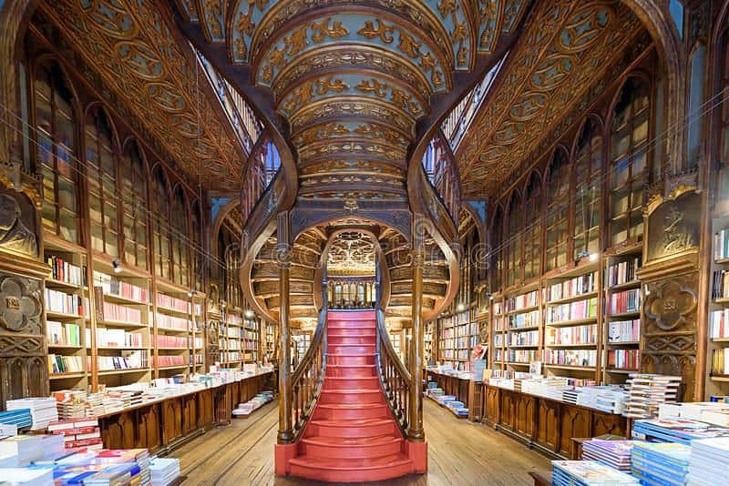

Hello! I'm Nuno Silva Ferreira from Porto, Portugal. I'm passionate about web development and design. When I'm not coding, I enjoy photography, hiking, and spending time with my family.
About Me
Porto, Portugal
Porto is a coastal city in northwest Portugal known for its stately bridges. Livraria Lello, one of the most beautiful bookstores in the world. Many believe J.K. Rowling was inspired by its staircase when creating Flourish and Blotts in Harry Potter.
Porto Portugal Temple
In the April 2025 General Conference, President Nelson announced the Porto Portugal Temple! This will be Portugal's second temple, joining the Lisbon Portugal Temple. The temple will bless members in northern Portugal and surrounding areas.